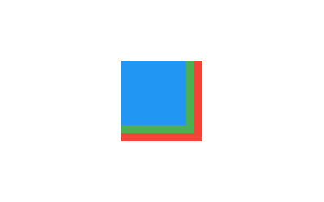
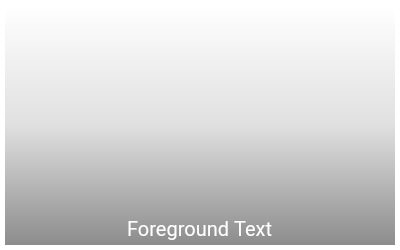

A widget that positions its children relative to the edges of its box. A Stack widget allows us to make multiple widgets overlay each other. This not only allows brilliant custom designs but also some really cool animations.
There are two main types of Stacks:
First we will explore the Stack widget.
Each child of a Stack widget is either positioned or non-positioned. Positioned children are those wrapped in a Positioned widget that has at least one non-null property.
The stack sizes itself to contain all the non-positioned children, which are positioned according to alignment (which defaults to the top-left corner in left-to-right environments and the top-right corner in right-to-left environments). The positioned children are then placed relative to the stack according to their top, right, bottom, and left properties.
The stack paints its children in order with the first child being at the bottom. If you want to change the order in which the children paint, you can rebuild the stack with the children in the new order. If you reorder the children in this way, consider giving the children non-null keys. These keys will cause the framework to move the underlying objects for the children to their new locations rather than recreate them at their new location
Stack(
children: <Widget>[
Container(
width: 100,
height: 100,
color: Colors.red,
),
Container(
width: 90,
height: 90,
color: Colors.green,
),
Container(
width: 80,
height: 80,
color: Colors.blue,
),
],
)
Here is the output would look like:
Here is one more example:
SizedBox(
width: 250,
height: 250,
child: Stack(
children: <Widget>[
Container(
width: 250,
height: 250,
color: Colors.white,
),
Container(
padding: EdgeInsets.all(5.0),
alignment: Alignment.bottomCenter,
decoration: BoxDecoration(
gradient: LinearGradient(
begin: Alignment.topCenter,
end: Alignment.bottomCenter,
colors: <Color>[
Colors.black.withAlpha(0),
Colors.black12,
Colors.black45
],
),
),
child: Text(
"Foreground Text",
style: TextStyle(color: Colors.white, fontSize: 20.0),
),
),
],
),
)
Here is the output:
In the above example both are non positioned widget. Taking the whole area of the stack. Leter we will see how we can use positioned widget. First lets look at few arguments the Stack widget provides:
This specifies the alignment of the non positioned children. For example, if the value is Alignment.center then the children will be positioned in the center.
How to size the non-positioned children in the stack. The class StackFit is used to provide the values. It defines two constant:
expand: The constraints passed to the stack from its parent are tightened to the biggest size allowed. For example, if the stack has loose constraints with a width in the range 10 to 100 and a height in the range 0 to 600, then the non-positioned children of the stack would all be sized as 100 pixels wide and 600 high.loose: The constraints passed to the stack from its parent are loosened. For example, if the stack has constraints that force it to 350x600, then this would allow the non-positioned children of the stack to have any width from zero to 350 and any height from zero to 600.passthrough: The constraints passed to the stack from its parent are passed unmodified to the non-positioned children. For example, if a Stack is an Expanded child of a Row, the horizontal constraints will be tight and the vertical constraints will be loose.Whether overflowing children should be clipped. Some children in a stack might overflow its box. When this flag is set to Overflow.clip, children cannot paint outside of the stack's box. You can use Overflow.visible to make the overflowed part visible.
A widget that controls where a child of a Stack is positioned.
If a widget is wrapped in a Positioned, then it is a positioned widget in its Stack. If the top property is non-null, the top edge of this child will be positioned top layout units from the top of the stack widget. The right, bottom, and left properties work analogously.
If both the top and bottom properties are non-null, then the child will be forced to have exactly the height required to satisfy both constraints. Similarly, setting the right and left properties to non-null values will force the child to have a particular width.
Here are the arguments:
top: The distance that the child's top edge is inset from the top of the stack.bottom: The distance that the child's bottom edge is inset from the bottom of the stack.left: The distance that the child's left edge is inset from the left of the stack.right: The distance that the child's right edge is inset from the right of the stack.height: The child's height.width: The child's width.
Positioned(
right: 40.0,
top: 40.0,
child: Container(
color: Colors.pink,
height: 150.0,
width: 150.0,
),
)
An IndexedStack is a stack where only one child is displayed at one time by its index.
IndexedStack(
index: 1,
children: <Widget>[
BottomWidget(),
MidWidget(),
TopWidget(),
],
)
In the above example, the widget MidWidget will be shown. And other two widget will be hidden.
It takes children like a usual Stack but in contrast to it, only displays one child at one time. In a way, it’s not a stack and more of a way to easily switch between children when you need to.
IndexedStack(
index: 0,
children: <Widget>[
Container(
color: Colors.green,
),
Container(
alignment: Alignment.bottomLeft,
color: Colors.blue,
height: 300.0,
width: 300.0,
),
Container(
color: Colors.pink,
height: 150.0,
width: 150.0,
)
],
),
In the above example, the first widget with green color will be shown as the index is 0.
The size is still the size of the largest child.
You can also use alignment, fit and overflow argument with the same concept of Stack widget.
Using the Positioned widget you can make a widget float on the Stack. You can use overflow property to make the overflowed content visible. But there is a major drawback.
The overflowed area of a Stack doesn't respond to the gesture. If you have a Positioned element where part of it is inside the Stack's bound and other part of the element is outside the Stack's bound. If you click on the part that is inside the Stack's bound, it will respond, but when you click on the part that is outside of the Stack's bound, it will not respond to any gesture. So overflowing content can be useful only when you don't need gesture for the overflowed content.
This is not a bug though, it is intentional by the Flutter developers.
The thing is overflowing is never welcomed in Stack layout or any layout in Flutter. It is always good practice to make you layout in a way that it fits inside its parent's bound.
To know more about this problem see this issue on Github.